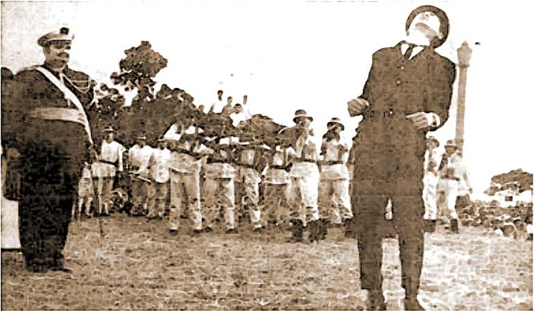

Jose Rizal Death
José Rizal, a prominent Filipino nationalist, polymath, and advocate for reform during the late 19th century, met his demise on December 30, 1896. Rizal's execution marked a significant event in Philippine history and served as a catalyst for the Philippine Revolution against Spanish colonial rule.

Rizal's involvement in the struggle for Philippine independence began with his writings and advocacy for social reforms. He used his pen as a powerful tool to criticize the injustices and abuses of the Spanish colonial administration, sparking intellectual discourse and awakening national consciousness among Filipinos.
On December 26, 1896, Rizal was arrested by Spanish authorities on charges of rebellion, sedition, and conspiracy. Despite his nonviolent stance and calls for reform through peaceful means, Rizal was implicated in the growing rebellion against Spanish rule. He was subjected to a trial by a military court, which found him guilty of the charges.
On the morning of December 30, 1896, Rizal was executed by firing squad at Bagumbayan (now Rizal Park) in Manila. Before his execution, Rizal maintained his composure and dignity, refusing to recant his beliefs or betray his principles. His martyrdom galvanized the Filipino people and fueled the flames of revolution against Spanish colonial rule.
Rizal's death became a symbol of Filipino resistance and paved the way for the Philippine Revolution of 1896, which ultimately led to the declaration of Philippine independence from Spain on June 12, 1898. Rizal's legacy as a national hero and symbol of Filipino nationalism remains deeply ingrained in Philippine culture and history, inspiring generations of Filipinos to fight for freedom, justice, and democracy.